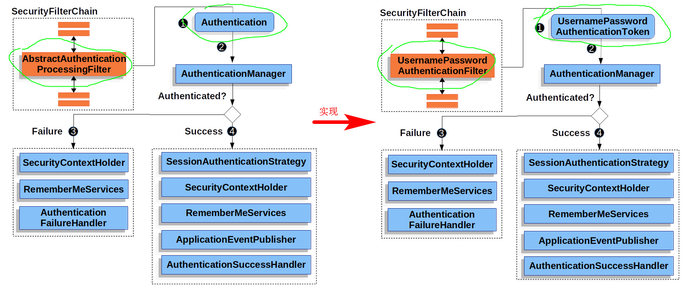
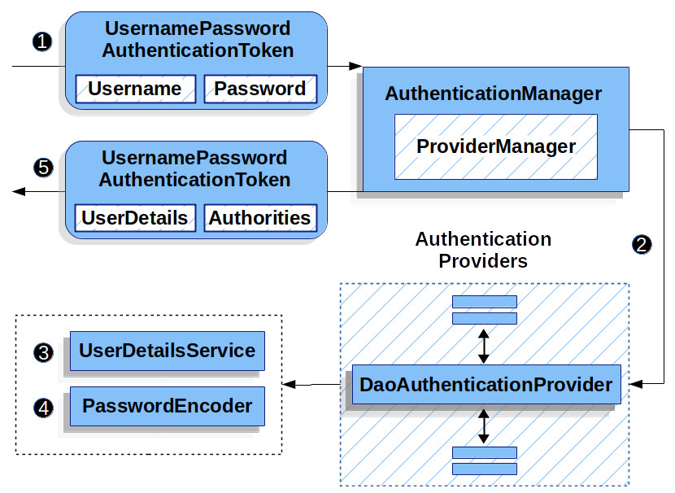

虽说这是最常规的做法，但是需要自己实现, 建议从 Storage Mechanisms 开始看。
这集开始涉及一些绕不开的关键概念，所以对官方文档做些翻译整理。先上一张用户名密码认证的图：

要点
UserDetails 是由 UserDetailsService 返回的
由 DaoAuthenticationProvider 来验证 UserDetails，然后返回一个 Authentication
这个 Authentication 持有一个 principal
这个 principal 就是 UserDetailsService 返回的 UserDetails
DaoAuthenticationProvider 是 AuthenticationProvider 接口的一种实现
DaoAuthenticationProvider 用 UserDetailsService 来获取用于比对的、真实正确的用户名、密码等信息
Spring Security 对 UserDetailsService 接口默认提供了 in-memory 和 JDBC 两种实现
为了自定义认证，要暴露出一个自己实现的 UserDetailsService Bean
密码加密由 PasswordEncoder 处理，可以暴露一个 PasswordEncoder Bean 来定制
DaoAuthenticationProvider 是 AuthenticationProvider 接口的一种实现，利用 UserDetailsService 和 PasswordEncoder 来认证一对用户名密码

对于上图的解释：
- UsernamePasswordAuthenticationFilter 传一个 UsernamePasswordAuthenticationToken 给 ProviderManager（它是 AuthenticationManager 的一种实现）
- ProviderManager 会用到一个 DaoAuthenticationProvider 类型的 AuthenticationProvider
- DaoAuthenticationProvider 从 UserDetailsService 处获取 UserDetails（可能是以一路传进来的 UsernamePasswordAuthenticationToken 上的用户名作为查询条件）
- DaoAuthenticationProvider 用 PasswordEncoder 验证 UsernamePasswordAuthenticationToken 上获取到的密码能不能和 UserDetails 上的密码匹配（这儿 原文 不是这样的，我不理解为什么它说 DaoAuthenticationProvider then uses the PasswordEncoder to validate the password on the UserDetails(?) returned in the previous step.
- 如果认证成功，返回一个 UsernamePasswordAuthenticationToken 类型的 Authentication，它的 principal 就是从 UserDetailsService 处捞来的 UserDetails，并且这个 UsernamePasswordAuthenticationToken 会被 UsernamePasswordAuthenticationFilter 加进 SecurityContextHolder 里